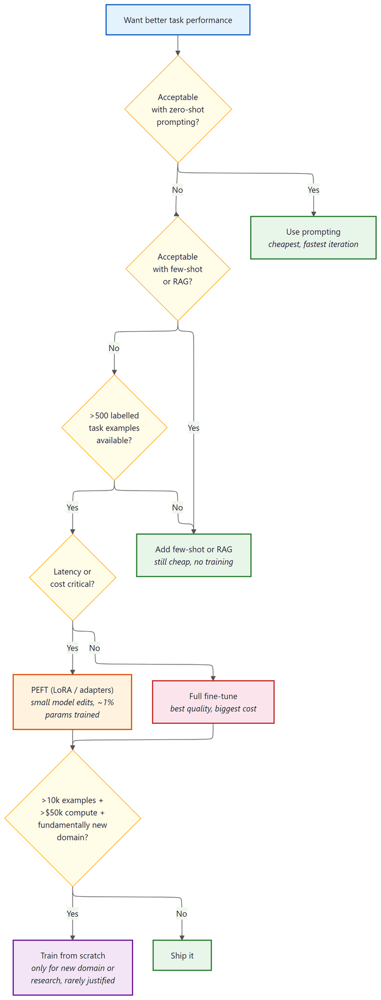
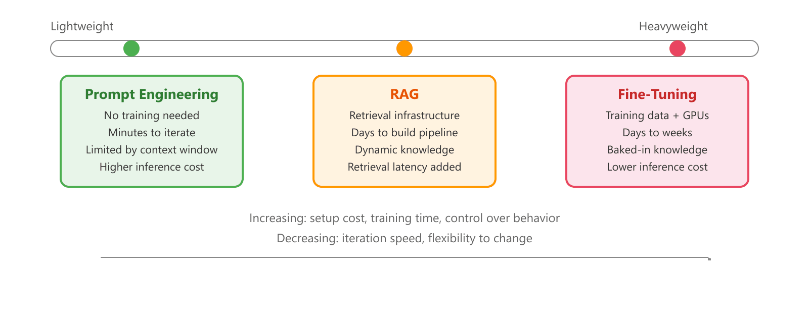
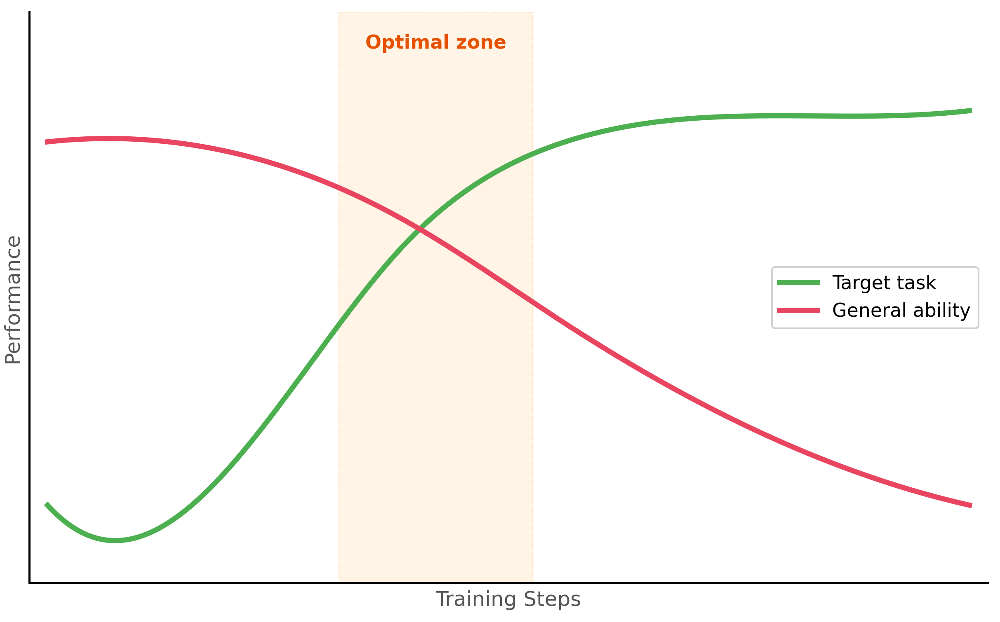

"Before you fine-tune, ask yourself: have I tried writing a better prompt? If yes, have I tried RAG? If yes, welcome. You may proceed."
Finetune, Gatekeeping AI Agent
Fine-tuning is powerful, but it is not always the right tool. Before investing in data collection, GPU hours, and training infrastructure, you need a clear framework for deciding whether fine-tuning will actually solve your problem better than prompt engineering or retrieval-augmented generation. This section provides that framework, covering the core use cases where fine-tuning excels, the different flavors of fine-tuning (full, parameter-efficient, continual pretraining), and the pitfalls that catch teams who jump to fine-tuning prematurely. The prompt engineering techniques from Chapter 12 and the hybrid architecture patterns from Section 13.1 are the alternatives to evaluate first.
Prerequisites
This section builds on the pretraining background from Section 6.1: The Landmark Models and the PyTorch training loops covered in Section 0.3: PyTorch Tutorial.
For a hands-on tutorial on fine-tuning with the Hugging Face Trainer API and ecosystem tools, see Hugging Face: Transformers, Datasets, and Hub.

Starts from 'want better task performance', then asks: (1) acceptable with zero-shot prompting? if yes, use prompting; (2) acceptable with few-shot or RAG? if yes, add few-shot or RAG; (3) more than 500 labelled task examples available? if no, fall back to few-shot or RAG; (4) latency or cost critical? if yes, PEFT with LoRA or adapters; if no, full fine-tune; (5) more than 10k examples plus 50k dollars of compute plus a fundamentally new domain? if yes, train from scratch; otherwise ship it. Color-coded by cost tier: green for cheap, orange for medium, red for expensive, purple for very expensive.16.1.1 The Adaptation Spectrum
A team generated 50K synthetic instruction-response pairs using GPT-4 to fine-tune a Llama-3 8B chatbot. The teacher prompt accidentally contained the phrase "you are a helpful assistant from OpenAI." After fine-tuning, ~3 percent of the student model's replies began with "As an AI assistant developed by OpenAI…", a contractual and brand disaster. Lesson: synthetic data inherits the teacher's biases, identity claims, and safety patterns. Always run a string-search audit on generated data for vendor names, refusal templates, and identity claims before training. Cost of the cleanup: 2 weeks of retraining. Cost of the audit script: 30 minutes.
Team D fine-tuned a small open-weight model with LoRA on their internal Q&A corpus. The model got noticeably better at their domain, and also got noticeably worse at refusing requests for medical advice, which was an explicit safety requirement they had set in the system prompt. Their post-finetune eval covered task accuracy but not safety refusals; QA caught it in the staging environment. Cause: the fine-tune dataset, mined from internal Slack, contained dozens of medical-adjacent threads where the model was instructed to be "helpful and concrete." The LoRA adapter learned to be helpful and concrete everywhere, including the refusal cases. Fix: add a held-out safety-refusal eval to every fine-tune CI run, and audit fine-tune datasets for instruction-style language that conflicts with the deployment system prompt. Lesson: catastrophic forgetting in PEFT is real and silent; it tends to hit the capabilities your training data doesn't reinforce, which is exactly the safety rails you set in the prompt.
When a pretrained language model does not meet your needs out of the box, you have several options for adapting it. These options form a spectrum from lightweight (no training required) to heavyweight (full model retraining). Understanding where each technique sits on this spectrum is essential for making cost-effective decisions.
16.1.1.1 Prompting, RAG, and Fine-Tuning
The three primary approaches to model adaptation differ in their complexity, cost, and the types of improvements they can deliver. Prompt engineering is the simplest: you craft instructions that guide the model toward the desired behavior at inference time. RAG augments the model with external knowledge by retrieving relevant documents and injecting them into the prompt. Fine-tuning modifies the model weights themselves through additional training on task-specific data. The diagram below places these approaches on the adaptation spectrum.
A common joke among ML engineers: "We spent two months fine-tuning a model, then someone on the team rewrote the prompt and got the same results in an afternoon." This happens often enough that experienced practitioners now enforce a "prompt ceiling" policy: you must demonstrate that the best prompt you can write fails to meet the quality bar before anyone is allowed to request GPU time for fine-tuning.
Mental Model: The Adaptation Ladder. Think of the adaptation spectrum as a ladder with increasing commitment at each rung. At the bottom, prompt engineering is like rearranging furniture in a rented apartment: zero commitment, instant changes. RAG is like hanging pictures: you add external knowledge without modifying the structure. Fine-tuning is like renovating: you change the walls (weights) themselves, which is powerful but expensive and hard to undo. Climb the ladder only when the rung below genuinely cannot solve your problem.

16.1.1.2 The Decision Framework
The following decision framework helps you determine which approach to try first. The key insight is that you should start with the lightest approach that could work and only move to heavier approaches when you have evidence that simpler methods fall short.
Fine-tuning a 7-billion-parameter model on a single GPU was science fiction in 2020. By 2024, it had become a weekend project. The pace of tooling improvement in this space makes Moore's Law look leisurely. Code Fragment 16.1.1a shows this approach in practice.
Code Fragment 16.1.2a encodes this decision framework as a function, walking through each criterion in priority order: try prompting first, then RAG, and fine-tune only when lighter approaches genuinely fall short.
# Decision framework: choose the lightest adaptation that meets requirements
# Evaluates prompting, RAG, and fine-tuning in ascending order of commitment
def choose_adaptation_strategy(task):
"""Decision framework for choosing between prompting, RAG, and fine-tuning."""
# Step 1: Can prompting solve it?
if task.can_be_described_in_prompt:
baseline = evaluate_with_prompting(task)
if baseline.meets_quality_threshold:
return "prompting" # Simplest solution that works
# Step 2: Is the gap about missing knowledge?
if task.requires_external_knowledge:
if task.knowledge_changes_frequently:
return "RAG" # Dynamic knowledge needs retrieval
if task.knowledge_is_static and task.dataset_size > 10_000:
return "fine-tuning" # Large static knowledge: bake it in
# Step 3: Is the gap about behavior or style?
if task.requires_specific_style or task.requires_specific_format:
if few_shot_examples_in_prompt_work:
return "prompting" # Few-shot can handle simple format changes
return "fine-tuning" # Complex style/format needs weight updates
# Step 4: Is the gap about latency or cost?
if task.latency_budget_ms < 200 or task.cost_per_query_budget < 0.001:
return "fine-tuning" # Smaller fine-tuned model is faster and cheaper
# Step 5: Combine approaches
return "RAG + fine-tuning" # Many production systems use bothCode Fragment 16.1.2b configures LoRA adapters.
# Quick comparison: resource requirements
def estimate_training_resources(
model_size_billions: float,
method: str = "full", # "full", "lora", "qlora"
precision: str = "fp16"
) -> dict:
"""Estimate GPU memory and storage for fine-tuning."""
bytes_per_param = {"fp32": 4, "fp16": 2, "bf16": 2, "int8": 1, "int4": 0.5}
param_bytes = bytes_per_param.get(precision, 2)
model_memory_gb = model_size_billions * 1e9 * param_bytes / (1024**3)
if method == "full":
# Model + gradients + optimizer states (AdamW: 2x for momentum)
training_memory_gb = model_memory_gb * 4 # Rough 4x multiplier
trainable_params = model_size_billions * 1e9
checkpoint_gb = model_memory_gb
elif method == "lora":
# Frozen model + small adapter gradients/optimizer
trainable_params = model_size_billions * 1e9 * 0.01 # ~1% of params
training_memory_gb = model_memory_gb + 2 # Base + adapter overhead
checkpoint_gb = 0.1 # Adapter only
elif method == "qlora":
# 4-bit quantized model + adapter
model_memory_gb = model_size_billions * 1e9 * 0.5 / (1024**3)
trainable_params = model_size_billions * 1e9 * 0.01
training_memory_gb = model_memory_gb + 2
checkpoint_gb = 0.1
return {
"method": method,
"model_size": f"{model_size_billions}B",
"training_memory_gb": round(training_memory_gb, 1),
"trainable_params": f"{trainable_params/1e6:.1f}M",
"checkpoint_size_gb": round(checkpoint_gb, 1),
"min_gpu": "A100 80GB" if training_memory_gb > 40 else "A100 40GB"
if training_memory_gb > 20 else "RTX 4090 24GB"
if training_memory_gb > 16 else "RTX 3090 24GB"
}
# Compare methods for a 7B model
for method in ["full", "lora", "qlora"]:
result = estimate_training_resources(7.0, method=method)
print(f"{method:6s}: {result['training_memory_gb']:5.1f} GB, "
f"{result['trainable_params']:>8s} params, "
f"checkpoint: {result['checkpoint_size_gb']} GB")The decision to fine-tune is fundamentally about economics, not capability. Almost any behavior achievable through fine-tuning can also be achieved through sophisticated prompting (with enough in-context examples, structured output schemas, and retrieval). The question is whether the per-inference cost of a long, example-heavy prompt exceeds the one-time cost of fine-tuning. For high-volume production endpoints processing thousands of requests per day, even a small reduction in prompt tokens pays for itself quickly. For low-volume or rapidly changing tasks, the flexibility of prompt engineering (Chapter 13) is almost always more cost-effective. See also the API cost structures in Chapter 09 for the full cost analysis framework.
16.1.2 Catastrophic Forgetting
Catastrophic forgetting is the phenomenon where a model, after being fine-tuned on a specific task, loses its ability to perform well on other tasks it could previously handle. This happens because gradient updates that improve performance on the fine-tuning data can overwrite weights that encode general knowledge.
16.1.2.1 Symptoms and Causes
The most common symptoms of catastrophic forgetting include degraded performance on general benchmarks (MMLU, HellaSwag), loss of instruction-following ability, increased repetition or degenerate outputs, and inability to handle prompts outside the fine-tuning distribution. The primary causes are training for too many epochs, using a learning rate that is too high, training on a dataset that is too narrow in distribution, and failing to include regularization. The figure below shows how task-specific and general performance diverge over training, and Code Fragment 16.1.3 demonstrates the approach in practice.

16.1.2.2 Mitigation Strategies
Code Fragment 16.1.3b packages the main forgetting mitigation strategies into a configuration class, covering learning rate scheduling, data mixing ratios, layer freezing, and regularization.
# Strategies for mitigating catastrophic forgetting
from dataclasses import dataclass
from typing import List, Optional
@dataclass
class ForgettingMitigationConfig:
"""Configuration for preventing catastrophic forgetting."""
# 1. Learning rate: use a low learning rate for fine-tuning
learning_rate: float = 2e-5 # 10x lower than pre-training
# 2. Short training: fewer epochs reduce overwriting
num_epochs: int = 3 # Rarely need more than 3-5
# 3. Data mixing: include general-purpose data
task_data_ratio: float = 0.7 # 70% task-specific
general_data_ratio: float = 0.3 # 30% general (e.g., OpenAssistant)
# 4. Regularization
weight_decay: float = 0.01
max_grad_norm: float = 1.0
# 5. Evaluation on general benchmarks during training
eval_general_benchmarks: bool = True
general_eval_datasets: List[str] = None
def __post_init__(self):
if self.general_eval_datasets is None:
self.general_eval_datasets = [
"mmlu", # General knowledge
"hellaswag", # Commonsense reasoning
"arc_easy", # Science questions
]
def get_data_mix(self, task_samples: int) -> dict:
"""Calculate how many general samples to mix in."""
general_samples = int(
task_samples * self.general_data_ratio / self.task_data_ratio
)
return {
"task_samples": task_samples,
"general_samples": general_samples,
"total": task_samples + general_samples,
"effective_task_ratio": task_samples / (task_samples + general_samples)
}
config = ForgettingMitigationConfig()
mix = config.get_data_mix(task_samples=5000)
print(f"Task: {mix['task_samples']}, General: {mix['general_samples']}, "
f"Total: {mix['total']}")Do not skip general evaluation. Many teams only measure performance on their target task during fine-tuning and discover too late that the model has lost critical general capabilities. Always evaluate on at least 2 to 3 general benchmarks at every checkpoint. If general performance drops more than 5% from the base model, you are likely overtraining.
16.1.2.3 Machine Unlearning
While catastrophic forgetting causes unintentional loss of knowledge, machine unlearning pursues the opposite goal: deliberately removing the influence of specific training data from a trained model. The primary regulatory motivation comes from the GDPR's "right to be forgotten" and the CCPA's data deletion requirements, which grant individuals the right to have their data removed from systems that processed it. For LLMs trained on billions of web-crawled documents, complying with a deletion request is non-trivial: simply removing the data from the training set does not remove its influence from the model weights.
Exact vs. Approximate Unlearning
Exact unlearning means retraining the model from scratch on the original dataset minus the data to be forgotten. This provides a provable guarantee (the resulting model is identical to one that never saw the data), but it is computationally prohibitive for large models. Training a 70B-parameter model costs millions of dollars; retraining for each deletion request is not feasible.
SISA (Sharded, Isolated, Sliced, Aggregated) training makes exact unlearning practical by partitioning the training data into disjoint shards. Each shard trains an independent sub-model, and the final model aggregates their predictions. When a data point must be forgotten, only the shard containing it needs retraining. The cost drops from retraining the entire model to retraining 1/N of it (where N is the number of shards). SISA was designed for traditional ML models; adapting it to LLM pretraining remains an open challenge because of the sequential, curriculum-dependent nature of language model training.
Approximate Unlearning for LLMs
Gradient ascent-based unlearning is the most common approximate approach for LLMs. The idea is simple: if training minimized the loss on the target data, unlearning maximizes it. The model is fine-tuned for a small number of steps with the loss function negated on the data to be forgotten, pushing the model away from those examples. This is often combined with a retention loss on a held-out general dataset to prevent the model from degrading on unrelated tasks.
However, approximate unlearning offers no formal guarantee that the data's influence is fully removed. Membership inference attacks can sometimes still detect traces of "unlearned" data, and the degree of removal varies depending on how memorized the data was. Highly duplicated or distinctive training examples leave deeper traces that are harder to erase.
The Editing-Unlearning Conflict
Machine unlearning interacts poorly with knowledge editing (Section 11.3). Sequential knowledge edits can inadvertently reintroduce information that unlearning removed, because both techniques modify overlapping regions of the model's weight space. Organizations applying both techniques must carefully sequence operations and verify that unlearning guarantees are preserved after subsequent edits.
The two-stage pipeline. For domain-specific applications, the most effective approach is often a two-stage pipeline: first, continual pretraining on domain text to inject knowledge, then instruction fine-tuning to teach the model how to use that knowledge in response to user queries. This separates the "what to know" stage from the "how to behave" stage and typically produces better results than either stage alone.
A widespread misunderstanding is that instruction fine-tuning (SFT) reliably injects new factual knowledge into a model. In practice, SFT primarily adjusts the model's behavior patterns: its output style, formatting, tone, and task-following abilities. If the base model does not already encode a piece of knowledge from pretraining, a few thousand SFT examples are unlikely to make it "learn" that fact reliably. For injecting domain knowledge, use continual pretraining on large volumes of domain text (see the table above). For retrieving dynamic or specialized facts at inference time, use RAG instead. SFT is the right tool for teaching the model how to respond, not what to know.
For most fine-tuning tasks, 1,000 carefully curated examples outperform 10,000 noisy ones. Invest time in data quality over data quantity. Clean, consistent, well-formatted training examples teach the model your task faster than bulk data with errors.
- Start with prompting, then RAG, and only fine-tune when you have evidence that simpler approaches are insufficient for your quality, latency, or cost requirements.
- Fine-tuning excels at style adaptation, output format enforcement, latency/cost optimization through model distillation, and injecting stable domain knowledge.
- RAG is better for dynamic knowledge that changes frequently, as fine-tuned knowledge becomes stale.
- Parameter-efficient methods (LoRA, QLoRA) achieve within 1 to 3% of full fine-tuning performance while using 10x less memory and enabling multi-task serving with swappable adapters.
- Catastrophic forgetting is mitigated by using low learning rates, short training schedules, data mixing with general-purpose examples, and continuous evaluation on general benchmarks.
- Two-stage fine-tuning (continual pretraining for knowledge, then SFT for behavior) is often the most effective approach for domain-specific applications.
Who: A clinical AI team at a healthcare startup building a Q&A system that answers physician questions about drug interactions and dosing guidelines.
Situation: They had access to a curated database of 15,000 drug interaction records and 3,000 dosing guidelines. Their initial GPT-4 prompt-based system answered 72% of questions correctly, but hallucinated plausible-sounding but incorrect dosing information for the remaining 28%.
Problem: Incorrect dosing information in a medical context is a patient safety risk. They needed to reach 95%+ accuracy on their test set of 500 physician-validated questions.
Dilemma: They could improve prompting with more examples and constraints (quick, limited ceiling), implement RAG to ground answers in their drug database (addresses hallucination but adds retrieval latency), or fine-tune a model on their Q&A pairs (best accuracy potential but requires data preparation and ongoing maintenance).
Decision: They implemented a staged approach: first RAG (which raised accuracy to 89%), then fine-tuned a Llama-2 7B model on 8,000 physician-validated Q&A pairs to serve as a specialized reader on top of retrieved documents. The fine-tuned model learned to cite sources and say "insufficient information" when the retrieved context did not support an answer.
How: RAG used a dense retriever over their drug database with re-ranking. For fine-tuning, they formatted each example as a context-question-answer triple where the answer always included a source citation or an explicit abstention. They used QLoRA to fine-tune on a single A100 GPU in 4 hours.
Result: The RAG plus fine-tuned model achieved 96.2% accuracy on the test set. Hallucinated dosing information dropped from 28% to 1.4%, and the model correctly abstained on 85% of questions where the database lacked sufficient information (compared to 12% abstention rate with prompting alone). Inference latency was 800ms including retrieval.
Lesson: The prompting-then-RAG-then-fine-tuning ladder is not just about accuracy; each step addresses different failure modes. RAG fixes knowledge gaps, while fine-tuning fixes behavioral patterns like hallucination and appropriate abstention.
16.1.3 Continual Pre-Training vs. Instruction Fine-Tuning
Fine-tuning comes in two distinct flavors that serve different purposes. Continual pretraining (also called domain-adaptive pretraining) extends the original pretraining objective on domain-specific text. Instruction fine-tuning (also called supervised fine-tuning or SFT) trains the model to follow instructions and produce specific outputs. Understanding the difference is critical for choosing the right approach.
16.1.3.1 Continual Pre-Training
Continual pretraining uses the same next-token prediction objective as the original pretraining, but on a domain-specific corpus. The model learns the vocabulary, concepts, and reasoning patterns of the target domain without any explicit instruction/output pairs. This is useful when the model lacks fundamental domain knowledge.
16.1.3.2 Instruction Fine-Tuning (SFT)
Instruction fine-tuning trains the model on input/output pairs where each input is a user instruction or query and each output is the desired response. This teaches the model to follow instructions, produce specific output formats, and adopt particular behaviors. Most practical fine-tuning falls into this category.
| Aspect | Continual Pre-Training | Instruction Fine-Tuning (SFT) |
|---|---|---|
| Training objective | Next-token prediction (causal LM) | Supervised on instruction/output pairs |
| Data format | Raw text (documents, papers) | Structured pairs (instruction, response) |
| Data quantity | Millions to billions of tokens | Thousands to tens of thousands of examples |
| Purpose | Inject domain knowledge | Teach behavior and format |
| Typical use | Medical, legal, financial models | Chatbots, task-specific assistants |
| Training duration | Days to weeks | Hours to a day |
| Example | Train on 10B tokens of medical literature | Train on 10K medical Q&A pairs |
Show Answer
Show Answer
Show Answer
Show Answer
Show Answer
Blurring boundaries between prompting and fine-tuning
The boundary between prompting and fine-tuning is blurring with techniques like in-context learning distillation, which compresses few-shot prompting behavior into model weights. Research on task arithmetic suggests that fine-tuning creates interpretable weight deltas that can be composed, negated, or scaled to control model behavior without retraining.
An open question is whether future models will make fine-tuning obsolete through sufficiently powerful in-context learning, or whether weight-level adaptation will always offer efficiency advantages.
Verified unlearning remains an open problem
As of 2025, no method can efficiently and provably remove a specific training example's influence from a large language model without full retraining. Approximate methods (gradient ascent, influence function approximations) reduce memorization on targeted benchmarks, but adversarial probing can often recover traces of the "forgotten" data.
The gap between regulatory requirements ("delete this user's data") and technical capability ("we reduced its measurable influence by 90%") is one of the most consequential open problems in trustworthy AI. Until verified unlearning is solved, organizations should combine approximate unlearning with complementary safeguards: output filtering, access controls, and transparent disclosure of unlearning limitations.
Exercises
List three scenarios where fine-tuning is clearly preferable to prompt engineering, and three scenarios where prompt engineering is sufficient.
Answer Sketch
Fine-tune when: (1) you need consistent style/format across thousands of outputs (e.g., company voice), (2) latency is critical and you want shorter prompts (fine-tuned models need less instruction), (3) you have domain-specific knowledge not in the base model's training data. Prompt engineering is sufficient when: (1) the task changes frequently, (2) you have few examples (<50), (3) you need rapid iteration without retraining.
A team wants their model to answer questions about their internal documentation. Compare fine-tuning on the docs versus using RAG. When would you choose each?
Answer Sketch
RAG: preferred when docs change frequently (new policies, product updates) because you update the retrieval index without retraining. Also preferred when you need citations and source attribution. Fine-tuning: preferred when you want the model to internalize a consistent style or domain vocabulary, when retrieval latency is unacceptable, or when the knowledge is procedural (how to do things) rather than factual (what the answer is). Many teams use both: fine-tune for style, RAG for facts.
Write a function that estimates whether fine-tuning is cost-effective compared to a longer prompt. Inputs: number of monthly requests, prompt length with/without fine-tuning, fine-tuning cost, and per-token API prices.
Answer Sketch
Calculate monthly cost for each approach: prompt_cost = requests * (long_prompt_tokens / 1000) * input_price + requests * (output_tokens / 1000) * output_price. ft_cost = requests * (short_prompt_tokens / 1000) * ft_input_price + requests * (output_tokens / 1000) * ft_output_price + monthly_amortized_training_cost. Return whichever is cheaper. Fine-tuning typically pays for itself above 10K to 100K monthly requests.
Explain catastrophic forgetting in the context of LLM fine-tuning. What happens to a model's general capabilities when you fine-tune it extensively on a narrow domain?
Answer Sketch
Catastrophic forgetting occurs when fine-tuning on new data overwrites the model's previously learned representations. A model fine-tuned heavily on legal text may lose its ability to write code or answer general knowledge questions, because the weight updates that optimize for legal tasks degrade the weights responsible for other capabilities. Mitigations: use a low learning rate, train for fewer epochs, mix in general-purpose data during fine-tuning, or use PEFT methods like LoRA that modify only a small subset of weights.
A startup has 500 labeled examples of customer intent data and wants 95% classification accuracy. Their current prompt-based approach achieves 88%. Should they fine-tune? What other options should they consider first?
Answer Sketch
Before fine-tuning, consider: (1) Improve the prompt with more few-shot examples (the current prompt may not be optimal). (2) Use a hybrid approach with a fast classifier + LLM fallback. (3) Generate more training data synthetically to supplement the 500 examples. If these fail, fine-tuning with 500 examples may work but is risky for overfitting. Consider PEFT (LoRA) to reduce overfitting risk, and always hold out 100 examples for evaluation.
The decision to fine-tune should start with "Have I exhausted prompt engineering?" In practice, most teams fine-tune too early. It is the ML equivalent of remodeling your kitchen when all you needed was a better recipe.
What Comes Next
In the next section, Section 16.2: Data Preparation for Fine-Tuning, we cover data preparation for fine-tuning, including format selection, data quality requirements, and dataset construction.